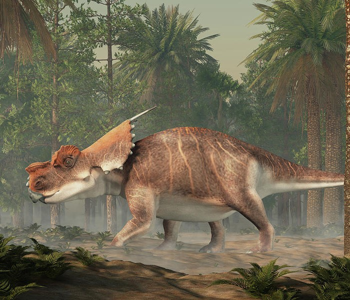

Achelosaurus

Information
| Weight |
3000-5000KG |
| Height |
2.7m |
| Length |
6m |
| Period |
Late Cretaceous |
| Diet |
Herbivore |
| Location |
Montana |
Description
The Achelosaurus was a herbivore that lived in the late Cretaceous period and inhabited North America.
The name
Achelousaurus is a reference to Greek mythology. Achelous, an important Greek god, had
one of his horns torn off by Hercules, in a mythological fight with the legendary hero. All three known
skulls of
Achelousaurus have rough bumps in the same places where other ceratopsians had horns, giving it the
appearance of
having had its horns ripped off, hence why the dinosaur is compared to Achelous. Achelous was also
celebrated for
his shapeshifting hability, just as Achelousaurus appears to combine features of other ceratopsian
dinosaurs.
Size comparison